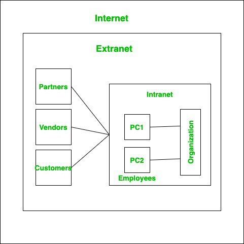

An extranet is an organization’s private network and its available only for selected users. It’s a way to connect to third parties like vendors, customers, and partners in a secure and controlled way. The users typically have a login mechanism such as username and password to access the network. Extranet in simple terms provides a secure network for an organization to share information with relevant people outside the organization. It is part of an organization’s intranet divided via a firewall.
